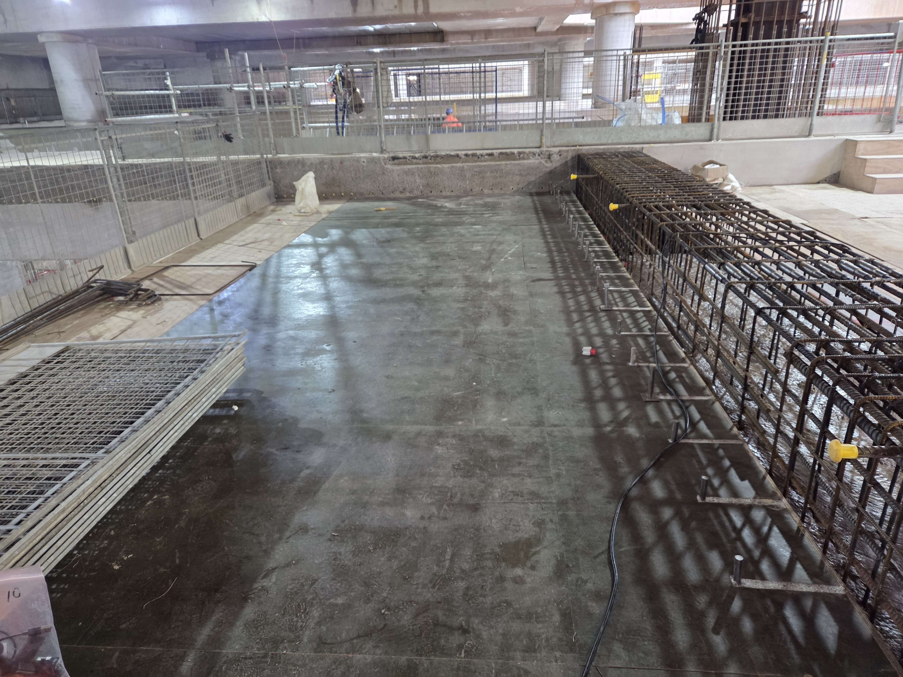

Every year the world generates billions of tonnes of waste while extracting ever more raw material to replace what it throws away. We work on both halves of that paradox: recovering clean energy, nutrients, protein, and water from organic waste streams, and redesigning the industrial systems, construction materials, and infrastructure that determine whether a resource is recovered or lost.

Why It Matters
Waste is where three global crises meet. It is a public health problem, because poorly managed waste exposes people to pathogens and pollutants, most acutely for the workers and communities living closest to it. It is a climate problem, because decomposing organic waste releases methane, and because everything we discard and replace carries the embodied carbon of making it again. And it is a resource problem, because the nitrogen, phosphorus, carbon, and energy locked in waste streams are precisely what a growing population needs.
The circular economy is often discussed as though the barriers were purely technical. Frequently they are not: the harder questions concern material quality, value chains, governance, and business models, including whether recovered material is safe and consistent enough to use, whether end users can afford the technology, and whether regulatory institutions support circular recovery. Our research spans the microbiology of a digester to the policy of a national resources strategy.
What We Do
Energy, cooling and nutrients from organic waste
Dr Miller Alonso Camargo-Valero, Associate Professor in BioResource Systems, leads research on wastewater and faecal sludge treatment, microalgal and duckweed biotechnology, and the recovery of energy, nitrogen, and phosphorus from organic waste streams, connecting this theme directly to our Sanitation, Wastewater & Faecal Sludge Management research.
Dr Cynthia Kusin Okoro-Shekwaga, University Academic Fellow in Bioresource Systems and former BBSRC Discovery Fellow (2022–2025), leads research on anaerobic digestion, biomethane enhancement, biohydrogen, and agricultural digestate valorisation. Through the BioCool programme, backed by £1.75M in Ayrton Challenge Energy follow-on funding (Innovate UK) after its 2024–2025 feasibility pilot, she and Dr Camargo-Valero partner with GreenHeat Uganda and Makerere University to turn crop and market waste into clean biomethane for off-grid milk chilling under an Energy-as-a-Service model.
Dr Franja Prosenc, Research Fellow in Bioresource Recovery, recovers nutrients and protein from wastewater, liquid digestate, and aquaculture effluents using microalgae and duckweed, and develops microalgal carbon capture to upgrade biogas. Dr Louise Fletcher, Associate Professor in Environmental Microbiology, leads the BBSRC-funded BEFWAM project, converting invasive aquatic macrophytes in tropical waterways into bioenergy, biofertiliser, and clean water.
Circular economy, low-carbon construction and infrastructure

Dr Anne Velenturf, Associate Professor in Circular Economy, works on whole-system resource flows, governance, and business models for sustainable circular transitions. Having led the £7 million NERC/ESRC/Defra Resource Recovery from Waste programme and served as Technical Programme Manager of TransFIRe (Transforming Foundation Industries Research and Innovation Hub), she leads research on circular economy transitions across offshore wind infrastructure (including Horizon Europe EoLO-HUBs wind turbine blade recycling and decommissioning), renewable energy systems, and the foundation industries (metals, cement, glass, ceramics, and chemicals).
Dr Subarna Sivashanmugam, Research Assistant in Low-Carbon Construction and Circular Economy, investigates Building Information Modelling (BIM), construction waste minimisation, and environmental life cycle assessment (LCA) of low-carbon concrete and cementitious systems, including comparing the whole-life environmental and cost performance of cast-in-situ and composite reinforced concrete slabs (EPSRC Impact Acceleration Account) and quantifying the embodied carbon of belite-calcium sulfoaluminate (BCSA) cement manufactured from industrial by-products (UKRI Future Leaders Fellowship).
Microplastics and emerging contaminants in soils and water
Plastics do not disappear; they fragment. Dr Franja Prosenc and Dr Louise Fletcher investigate microplastic prevalence and extraction from complex organic matrices such as compost, digestate, and agricultural soils, alongside the microalgae-based removal of endocrine-disrupting plasticisers and micropollutants.
The health of waste workers and communities
Waste is a public health issue, and exposure is unevenly shared. Dr Louise Fletcher and Prof. Barbara Evans (Professor of Public Health Engineering and Deputy Head of School of Civil Engineering) have quantified bioaerosol exposure among waste workers at open dumpsites and composting facilities, using Quantitative Microbial Risk Assessment (QMRA) to estimate infection risk from airborne pathogens such as Aspergillus fumigatus and E. coli, and testing biofilters to abate emissions.
Bio-mediated ground processes
Dr Shashank Subramanyam, Lecturer in Geoenvironmental Engineering, works on biogeotechnics, soil and waste interactions, and the bioremediation and stabilisation of contaminated ground, linking this theme to our Water Supply & Treatment research.
The Computational Thread
Resource-recovery reactors are multiphase physical and biological systems. Dr Duncan Borman develops computational fluid dynamics (CFD) for non-Newtonian mixing inside anaerobic digesters and bioreactors, which governs heat transfer, biogas yield, and parasitic energy demand. Explore our wider capabilities and computational methods.
Facilities
Our Public Health and Environmental Engineering Laboratories include dedicated facilities for solid waste, bioprocess engineering, and wastewater characterisation, supported by a Class II microbiological containment suite. Specialist BioResources equipment includes bench-top and pilot-scale anaerobic digesters, an Automated Methane Potential Testing System (AMPTS II), illuminated photobioreactors and raceway pond systems for microalgae and duckweed cultivation, gas and ion chromatography, and the high-throughput HACH AP3900 analytical robot. View all research facilities.
Partnerships & Spotlights
Our researchers work with UK government departments, regulators, utilities, and industry partners, alongside active international partnerships in Uganda, Colombia, Mexico, Slovenia, South Africa, India, and Indonesia. The theme connects closely to the Global Food and Environment Institute, the Priestley Centre for Climate Futures, and water@leeds.
Read Dr Cynthia Okoro-Shekwaga's Researcher Spotlight · Explore BioCool
Study With Us
We supervise doctoral research across anaerobic digestion, microalgae and duckweed biorefineries, circular economy for infrastructure and foundation industries, microplastics in soils and water, and waste-related public health. We welcome applicants from engineering, environmental science, biotechnology, chemistry, microbiology, and the social sciences.
Work With Us
If you produce an organic or industrial waste stream, operate anaerobic digestion or resource-recovery infrastructure, or shape circular economy policy, we would like to hear from you.